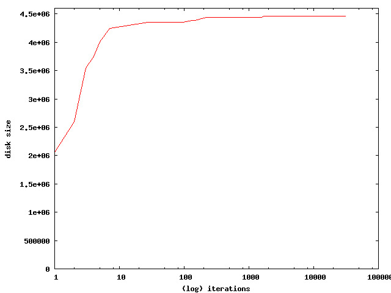

what is a random walk? it's a very simple simple algorithm that randomly makes small changes to a solution and just keeps track of the best one so far.
it's easy to apply this to our folder problem
using the script random_walk.rb we can find a pretty damn good solution in about 1 second for the 16 folder problem (the upper bound is 4463788)
iter=0 new max=1137844 9blobs iter=1 new max=2062294 9blobs, rgb torus reflect iter=2 new max=2597730 9blobs, chocolate stand, rgb torus reflect iter=3 new max=3541270 9blobs, back2revisited, chocolate stand, rgb torus reflect iter=4 new max=3751234 rgb checker spheres, 9blobs, back2revisited, chocolate stand, rgb torus reflect iter=5 new max=4008582 rgb checker spheres, 9blobs, back2revisited, chocolate stand, closed motor particles, rgb torus reflect iter=7 new max=4247910 rgb checker spheres, 9blobs, back2revisited, chocolate stand, rgb torus reflect, wideanglecheckers iter=28 new max=4352088 4step, 9blobs, back2revisited, bw nye spin, chocolate stand, the cell, wideanglecheckers iter=96 new max=4357528 rgb checker spheres, 360statue, a minute of pi, bw nye spin, closed motor particles, rgb torus reflect, underlay iter=132 new max=4384538 9blobs, bw meta reflect2, chocolate stand, the cell, underlay iter=149 new max=4386042 4step, back2revisited, chocolate stand, the cell, underlay, wideanglecheckers iter=217 new max=4436412 rgb checker spheres, back2revisited, bw meta reflect2, closed motor particles, wideangls, yellow_react_skyl iter=523 new max=4441718 360statue, 4step, closed motor particles, rgb torus reflect, wideangls, yellow_react_skyl iter=1171 new max=4442144 rgb checker spheres, 360statue, 4step, bw meta reflect2, bw nye spin, chocolate stand, the cell, yellow_react_skyl iter=1574 new max=4443202 360statue, 9blobs, bw meta reflect2, underlay, wideanglecheckers iter=1740 new max=4460478 rgb checker spheres, 360statue, 4step, 9blobs, a minute of pi, closed motor particles, underlay iter=3025 new max=4462950 rgb checker spheres, 9blobs, bw nye spin, chocolate stand, underlay, wideanglecheckers iter=6087 new max=4462982 rgb checker spheres, 4step, a minute of pi, bw meta reflect2, bw nye spin, closed motor particles, rgb torus reflect, yellow_react_skyl iter=19257 new max=4463352 a minute of pi, back2revisited, chocolate stand, closed motor particles, wideangls, yellow_react_skyl iter=29420 new max=4463668 rgb checker spheres, 360statue, 9blobs, back2revisited, bw meta reflect2, bw nye spin, chocolate stand iter=30843 new max=4463672 4step, 9blobs, back2revisited, the cell, wideanglecheckers, wideangls
a very good solution is found very quickly, there is little improvement after the first 100 or so iterations 
but how about with some more combinations? lets try 30 folders after 5 seconds we've got a pretty good solution, only 4 off the gloabl optimal. (recall brute_force2.c took 2.5 minutes to find the global optimum of 4,463,784)
iter=0 new max=2627414 underla3 iter=1 new max=3470954 back2revisite2, underla3 iter=2 new max=3628302 back2revisite2, closed motor particle3, underla3 iter=3 new max=3885650 closed motor particles, back2revisite2, closed motor particle3, underla3 iter=4 new max=4029190 closed motor particles, back2revisite2, closed motor particle3, underla3, back2revisite3 iter=515 new max=4406858 rgb checker spheres, 4step, a minute of pi, bw nye spin, back2revisite2, chocolate stan2, rgb torus reflec3, 4ste3 iter=2777 new max=4454504 a minute of pi, chocolate stand, closed motor particles, a minute of p2, back2revisite2, chocolate stan2, closed motor particle2, closed motor particle3, the cel3, 360statu3 iter=10266 new max=4461772 rgb checker spheres, back2revisited, chocolate stand, bw nye spi2, closed motor particle2, closed motor particle3, the cel3, rgb checker sphere3, 4ste3, back2revisite3, bw meta reflect3 iter=45709 new max=4463090 a minute of pi, chocolate stand, rgb torus reflec3, wideanglechecker3, rgb checker sphere3, 4ste3, 9blo3, bw meta reflect3 iter=147837 new max=4463710 4step, chocolate stand, back2revisite2, bw nye spi2, chocolate stan2, rgb torus reflec3, the cel3, wideanglechecker3, back2revisite3, bw meta reflect3 iter=1253248 new max=4463780 9blobs, a minute of pi, bw meta reflect2, bw nye spin, chocolate stand, closed motor particles, closed motor particle3, wideanglechecker3, rgb checker sphere3
random walk is unstoppable!!
even with 100 folders, which would be 2100 ( 1,267,650,600,228,229,401,496,703,205,376 ) combos we find very good solutions quickly. here are the outputs from 4 runs stopped after a minute the actual best solutions are found in about 1/100 of a second and non better are found over the next 10 seconds i think this is indicative of the type of problem this is; one where there are many nearly optimal solutions we can see this in the 16 folder problem where there are 15,792 feasible solutions (ie would fit on a disk) out of all 65,536 possible
Dec 2008